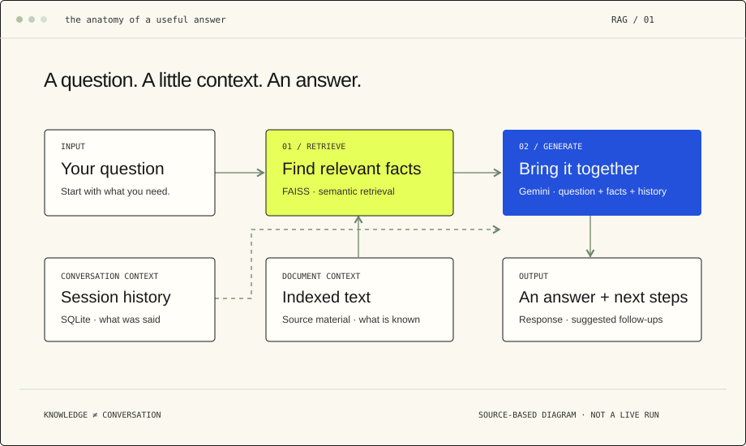

01 / Castle & applied AI / Architecture & engineering
Applied AI & agent infrastructure.
Retrieval, conversation history, and a small graph: exploring the system around a language model.
- Focus
- Architecture & product engineering
- Stack
- React · Flask · LangGraph · Gemini
- Context
- FAISS retrieval · SQLite history

The model is one part of the system.
At Castle, my work connects technology direction, architecture, and product engineering. AI systems bring those responsibilities together: choosing a useful workflow, deciding what the system may access, and making its behavior inspectable.
A public example, at a smaller scale.
A chat interface can make a language model feel simple. The more interesting question sits behind it: how does the system find relevant information, and how does it keep a conversation coherent?
This educational example brings a React interface, Flask endpoints, semantic retrieval, and a LangGraph workflow into one inspectable application. The public repository is linked below so the explanation can be followed back to the code.
Make the boundaries explicit.
The experiment needs a readable flow.
Knowledge is retrieved. Conversation is remembered.
FAISS selects relevant text from the document index. A separate SQLite-backed history wrapper supplies session context. These are different responsibilities: remembering what was said does not replace retrieving relevant facts.
Keep the graph small enough to follow.
The graph has two explicit stages: retrieve, then generate. The retrieval stage selects three matching text chunks; the generation stage combines retrieved facts, the current question, and available chat history in a prompt.
Let the interface support the next question.
The API returns an answer and suggested follow-up questions. Separate endpoints expose chat history and session reset, making the conversation lifecycle visible in the application.
Follow the implementation.
The workflow and routes are available in the public source. This portfolio explains their structure; live API behavior, model availability, and response quality have not been revalidated for this portfolio.
A small excerpt: the two-stage graph
graph.add_node("retrieve", retrieve)
graph.add_node("generate", generate_response)
graph.set_entry_point("retrieve")
graph.add_edge("retrieve", "generate")
graph.set_finish_point("generate")Excerpt from langgraph_runner.py in the linked repository.
Clear boundaries make a system easier to understand.
Retrieval and conversation history solve different problems. Clear boundaries make it easier to inspect the flow and evaluate whether the system is doing something useful.
The value here is an understandable flow. It gives a concrete starting point for discussing what context belongs in a prompt, how sessions are represented, and what needs to be evaluated before an experiment becomes a dependable application.
Retrieval alone does not prove that an answer is correct. A next evaluation would check answers against a small reference set and test how the system behaves when the source material cannot answer a question.
Project status and limits.
This is an educational architecture study, not a production-service claim. The portfolio does not call a model, accept documents, or store conversations.
Source & contributors. This example is hosted on my GitHub. See the linked repository and its contributor history for implementation credit.
Next project